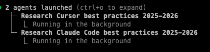
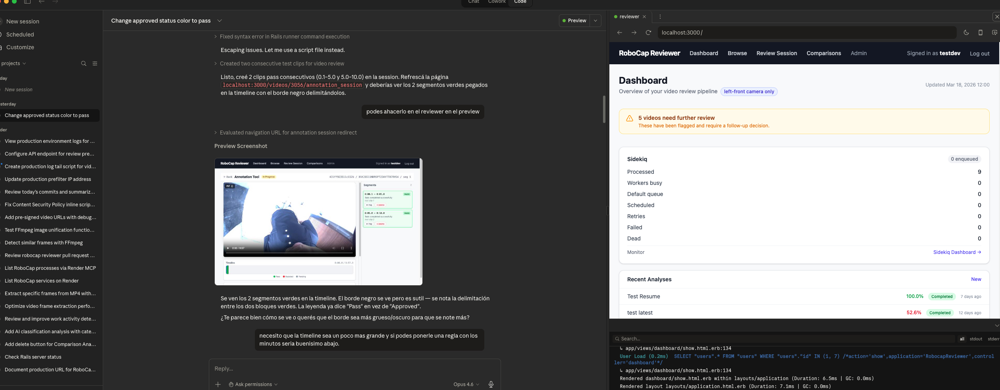
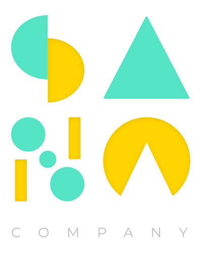

SANA · 2026
IA & Mejores Prácticas
para tu Día a Día
Cursor + Claude Code: cómo usar ambas herramientas
para multiplicar tu productividad.
Agenda
Qué vamos a cubrir
📊
Los 8 Niveles
Dónde estamos y hacia dónde vamos en adopción de IA
⌨️
Cursor + Claude Code
Fundamentos, rules e instrucciones — lado a lado
🤖
Skills, MCP & Agentes
Integraciones, workflows y trabajo en paralelo
Steve Yegge · Pragmatic Engineer
Los 8 Niveles
de Adopción de IA
¿En qué nivel estás?
Niveles 1–4
Del cero al autocomplete
1
Sin IA
Googlea el error, copia de Stack Overflow, escribe cada línea a mano.
2
Agente en IDE + Permisos
Tiene Cursor/Copilot pero lee cada sugerencia línea por línea antes de aceptar.
3
Modo YOLO
Acepta sugerencias de archivos enteros. Le dice “creáme el endpoint” y lo deja correr.
4
Menos Code Review
Corre los tests en vez de leer el diff. Si pasan, mergea.
Cris necesita un CRUD de usuarios. Escribe el prompt, Cursor genera 4 archivos, pero él revisa cada línea antes de guardar (nivel 2).
Emi necesita lo mismo. Le dice a Composer “creáme el CRUD completo con validaciones”, acepta todo, y solo revisa que compile (nivel 3).
El Colo hace lo mismo pero directamente corre npm test. Si pasa, hace commit sin leer el código generado (nivel 4).
Niveles 5–8
Del agente único al orquestador
5
Agent-First
Le tirás un ticket de Linear y el agente investiga, planea, implementa y te avisa cuando terminó.
6
Múltiples Agentes
Mientras un agente arregla un bug, otro escribe los tests y un tercero actualiza la doc.
7
Orquestación Manual
10+ agentes. Terminales por todos lados. “Le mandé el contexto al agente equivocado.”
8
Orquestador Custom
Construiste tu propio sistema que asigna tareas a agentes automáticamente.
Santi le pega un screenshot del error de Sentry a Claude Code y le dice “arreglalo”. Se va a hacer café. Vuelve y el fix + test están listos (nivel 5).
Mauro abre 3 terminales: un agente migra la DB, otro refactoriza el service, otro escribe tests de integración. Los 3 corren al mismo tiempo (nivel 6).
Tomi tiene un skill /sprint-review que lanza 8 agentes que revisan todos los PRs de la semana, generan un resumen y lo postean en Slack (nivel 7).
SANA futuro: un webhook de Linear crea un ticket, tu orquestador asigna agentes que investigan, implementan, corren tests y abren el PR — vos solo aprobás (nivel 8).
Meta realista para SANA: Que todos lleguemos a nivel 5–6 con rules sólidas, skills y MCP bien configurados.
Herramientas
Cursor + Claude Code
Dos herramientas, un mismo objetivo.
Así se usan juntas.
Cursor
Los 3 modos de Cursor — cuándo usar cada uno
Chat
Cmd+L
Para preguntar y entender. No edita archivos, solo responde.
> ¿Qué hace esta función?
> ¿Por qué falla este test?
> ¿Cómo funciona el auth flow?
Barato en tokens. Ideal para explorar.
Composer
Cmd+I
Para editar múltiples archivos a la vez. Entiende las relaciones entre ellos.
> Creáme un CRUD de productos
con modelo, controller y rutas
> Refactorizá el auth para usar JWT
5-10x más tokens que Chat. Usar estratégicamente.
Agent
dentro de Composer
Para tareas autónomas. Planea, ejecuta comandos, crea archivos, itera solo.
> Arreglá el bug #142, corré
los tests y avisáme si pasan
> Instalá Stripe y configurá
el checkout completo
El más caro, pero el más potente.
Regla simple: ¿Solo preguntás? Chat. ¿Querés que edite código? Composer. ¿Querés que haga todo solo? Agent.
Configuración
Rules &
Instrucciones
Cómo decirle a cada herramienta qué hacer
Rules
Misma intención, distinta sintaxis
Cursor Rule (.mdc)
---
description: "REST API guidelines"
globs: "src/api/**/*.ts"
alwaysApply: false
---
- Usar JSON response: { data, error, meta }
- Validar input con zod
- Loguear errores con request context
4 tipos: Always Apply, Glob-based, Agent-requested (por description), Manual (@ruleName).
Claude Code Rule (.md)
---
paths:
- "src/api/**/*.ts"
---
- Usar JSON response: { data, error, meta }
- Validar input con zod
- Loguear errores con request context
Se activa al leer archivos que matchean el path. /init genera rules automáticamente.
Las instrucciones de negocio son idénticas — solo cambia el formato del archivo. Mantené ambas sincronizadas.
Claude Code
CLAUDE.md — la fuente de verdad
Se carga automáticamente en cada sesión. Mantenerlo en 50–100 líneas. Usá @imports para detalles.
Next.js 15, TypeScript, Prisma, tRPC
- npm run dev — servidor local
- npm test — correr tests
- npm run lint — lint + format
- 2-space indent, functional components
- API handlers en src/api/handlers/
Niveles de CLAUDE.md
./CLAUDE.md
~/.claude/CLAUDE.md
./CLAUDE.local.md
.claude/rules/*.md
Tip: /init genera CLAUDE.md analizando tu codebase. Cursor también lee CLAUDE.md como contexto.
Best Practices
Rules que funcionan (aplica a ambas herramientas)
DO
- Una preocupación por archivo de rule
- Menos de 500 líneas por rule
- Instrucciones concretas y verificables
- Globs/paths específicos
- Referenciar archivos reales del proyecto
DON'T
- Duplicar lo que ya hace el linter
- Copiar código entero en la rule
- Rules vagas: “escribi buen código”
- Un solo archivo gigante para todo
- Olvidarse de actualizar las rules
Compartido
AGENTS.md — norma compartida entre herramientas
AGENTS.md define los roles de agentes que ambas herramientas leen. Se commitea al repo.
Rol: Senior code reviewer
Foco: seguridad, performance, legibilidad
Rol: QA automation engineer
Foco: edge cases, integración
Usa vitest + testing-library
Rol: DBA — schema safety
Nunca DROP sin confirmación
Quién lo lee nativamente
| Herramienta | Soporte |
|---|
| Cursor | Auto — lo lee como contexto del proyecto |
| Copilot / Codex / Windsurf | Auto — soporte nativo |
| Claude Code | Manual — agregar @AGENTS.md en CLAUDE.md |
Un archivo, todos los AI assistants. Cualquier dev que clone el repo ya tiene las mismas definiciones.
Claude Code
Skills
Workflows reutilizables como slash commands
Skills
Extendé Claude con Skills custom
Un Skill = un SKILL.md con instrucciones. Se invoca con /nombre.
---
name: deploy
description: Deploy to staging/prod
allowed-tools: Bash, Read
---
1. Run npm test
2. Run npm run build
3. Ask environment (staging/prod)
4. Execute deploy script
5. Verify health check
Skills built-in
- /simplify — review de calidad
- /loop — ejecutar en schedule
- /compact — comprimir contexto
- /init — bootstrap de proyecto
Dónde crearlos
~/.claude/skills/mi-skill/SKILL.md
.claude/skills/mi-skill/SKILL.md
Skills
Features avanzadas
Variables
$ARGUMENTS
$1
${CLAUDE_SKILL_DIR}
Contexto Dinámico
PR diff: !`gh pr diff`
Branch: !`git branch`
Tests: !`npm test 2>&1`
Control
user-invocable: false
→ Solo Claude lo activa
context: fork
→ Corre en subagent aislado
Cursor + Claude Code
MCP
Model Context Protocol
Conectá tus herramientas al mundo exterior
MCP
¿Qué es MCP?
Estándar abierto que conecta Cursor y Claude Code con herramientas externas. Un solo .mcp.json sirve para ambos.
Servidores populares
- GitHub — PRs, issues, code search
- Notion — Docs, bases de datos
- Sentry — Errores en producción
- PostgreSQL — Queries directos
- Linear — Issues y projects
- Figma — Diseños a código
Configuración compartida
{
"mcpServers": {
"github": {
"type": "http",
"url": "https://api.githubcopilot.com/mcp/"
},
"sentry": {
"type": "http",
"url": "https://mcp.sentry.dev/mcp"
}
}
}
Scopes: project (.mcp.json, compartido), local (personal), user (global).
MCP
Ejemplo: conectar AWS
Usá el AWS MCP Server para que Claude interactúe directo con tus servicios.
claude mcp add --transport stdio \
--env AWS_PROFILE=sana-dev \
--env AWS_REGION=us-east-1 \
aws -- npx -y @anthropic-ai/aws-mcp
{
"mcpServers": {
"aws": {
"type": "stdio",
"command": "npx",
"args": ["-y", "@anthropic-ai/aws-mcp"],
"env": {
"AWS_PROFILE": "sana-dev",
"AWS_REGION": "us-east-1"
}
}
}
}
Qué podés hacer
- S3 — “listá los buckets y mostráme el último backup”
- CloudWatch — “traéme los logs de errores de las últimas 2h”
- Lambda — “mostráme las invocaciones fallidas”
- DynamoDB — “query los items donde status=error”
- ECS — “cuál es el estado de los servicios?”
Auth: Usa tu AWS_PROFILE existente. Hereda tus permisos IAM — nunca hardcodeés access keys.
Cursor + Claude Code
SubAgents
Trabajo en paralelo con agentes especializados
SubAgents
Agentes especializados a tu servicio
Explore
Modelo rápido (Haiku). Solo lee. Ideal para descubrir código.
Plan
Solo lectura. Investiga y diseña estrategia.
General-Purpose
Todas las herramientas. Para tareas complejas multi-paso.
Key insight: Los subagents corren en su propio contexto → no contaminan tu conversación principal. Podés lanzar varios en paralelo.
SubAgents
Creá tus propios agentes
---
name: code-reviewer
description: Expert code review
tools: Read, Glob, Grep, Bash
model: sonnet
---
You are a senior code reviewer.
When invoked:
1. Run git diff to see changes
2. Focus on modified files
3. Check for:
- Code clarity
- Duplicated code
- Error handling
- Exposed secrets
Output: Critical > Warnings > Suggestions
Opciones del frontmatter
- model: haiku — barato y rápido
- model: opus — máxima capacidad
- isolation: worktree — git worktree aislado
- background: true — siempre en background
- maxTurns: 10 — limitar rondas
Dónde guardarlos
~/.claude/agents/
.claude/agents/
Workflows
El poder del trabajo en paralelo
Lanzás múltiples agentes y cada uno trabaja en su tarea. Corren en background mientras vos seguís haciendo otra cosa.
Agent 1: Investiga best practices de Cursor
Agent 2: Investiga best practices de Claude Code
Vos: Seguís trabajando. Cuando terminan, revisás los resultados.
Esto es nivel 6. No esperás a que termine uno para arrancar el otro. Multiplexing real.

2 agentes lanzados en background — cada uno investigando un tema distinto
En acción
El agente prueba mientras vos mirás
Claude Code implementa cambios, levanta el server, abre el browser y verifica visualmente que todo funcione. Vos le das feedback en tiempo real.
- Izquierda: Lista de tareas del agente — cada una es un paso que ejecutó.
- Centro: La conversación — el agente muestra qué hizo y te pregunta si está bien.
- Derecha: El browser con la app corriendo en localhost:3000 — ves el resultado en vivo.
Esto es nivel 5. El agente lidera, vos revisás. Le decís “necesito que la timeline sea más grande” y sigue iterando.

Claude Code + browser preview — el agente implementa y vos ves el resultado
Claude Code
Ejemplo: sesión real en la terminal
$ cd ~/projects/sana-api
$ claude
> hay un bug en /api/users que devuelve 500
cuando el email tiene caracteres especiales
Claude: Encontré el problema en src/api/handlers/users.ts:47
El regex no soporta chars unicode.
[Fix aplicado + test agregado]
> /deploy staging
> lanzá 3 agentes: uno que revise seguridad,
otro que busque bugs similares, y otro que actualice el changelog
> refactorizá el módulo de auth completo &
$ claude -c
Setup Completo
Estructura ideal para un proyecto
Compartido (se commitea)
proyecto/
CLAUDE.md
AGENTS.md
.mcp.json
.cursorignore
.cursor/
rules/
base.mdc
api.mdc
.claude/
rules/
api.md
skills/
deploy/
SKILL.md
agents/
reviewer.md
Personal (NO se commitea)
CLAUDE.local.md
~/.claude/CLAUDE.md
~/.claude/skills/
~/.claude/agents/
Flujo para compartir
- Creás un skill/agent en ~/.claude/
- Lo probás en tu máquina
- Lo movés a .claude/ del proyecto
- PR + review como cualquier cambio
- El equipo lo tiene con git pull
Acción
Quick Wins — empezar hoy
Esta semana
- Crear .cursor/rules/base.mdc + CLAUDE.md
- Agregar AGENTS.md en la raíz del proyecto
- Configurar .cursorignore para excluir ruido
- Instalar Claude Code: npm i -g @anthropic-ai/claude-code
Este mes
- Crear 2-3 skills para workflows repetitivos
- Configurar .mcp.json (GitHub, Sentry, DB)
- Crear un subagent de code review
- Probar trabajo en paralelo (nivel 5-6)
Pro Tips
Tips que hacen la diferencia
Prompt Engineering
- Se específico: “usá zod para validar”
- Dá contexto: “la función X hace Y”
- Un paso a la vez para cambios grandes
- Pegá screenshots, no describas errores
Workflow
- Plan mode primero, implementar después
- /compact cuando la conversación crece
- Commits pequeños y frecuentes
- Nunca confiar ciegamente — revisar output
Claude Code
- claude --resume para continuar sesiones
- /memory para memoria persistente
- Ctrl+B para mandar al background
- Multimodal: pegar imágenes en el CLI
Cursor
- @codebase para búsquedas amplias
- Composer para multi-archivo
- .cursorignore para excluir ruido
- Verificar que codebase indexing esté ON
Cierre

La IA no te reemplaza.
Te multiplica.
Pero solo si le das el contexto correcto,
las rules adecuadas, y confiás en el proceso.
Cursor Rules
CLAUDE.md
AGENTS.md
Skills
MCP
SubAgents